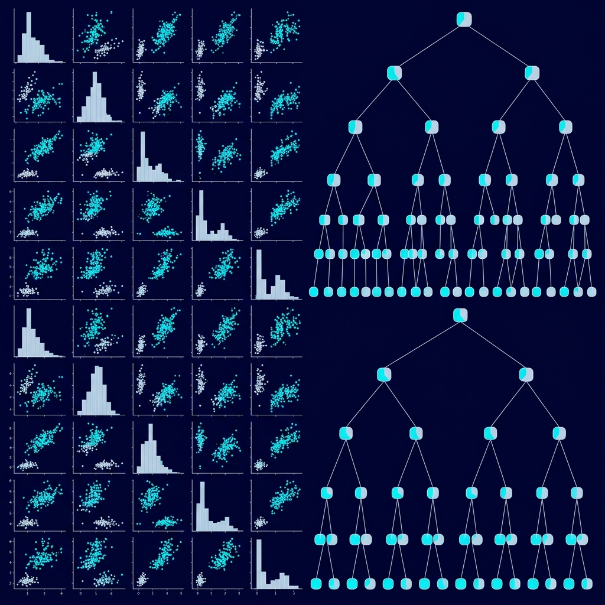

Case Studies
AI-Based CCTV Workforce Tracking
Client: PT Ajinomoto Indonesia
The Problem: The client needed a reliable, non-intrusive way to monitor exact positions and activities of factory workers across specific operational zones, 24/7.
What I Did: Engineered a custom computer vision pipeline using YOLOv8 for person detection and EasyOCR to dynamically read jersey numbers. Built a high-performance multi-threaded backend using FastAPI and WebSockets.
The Outcome: Stable 24/7 video stream processing with zero memory bottlenecks, providing real-time worker tracking across virtual work zones.
PRISMA (Federated Learning Major Recommendation)
The Problem: Training an ML model to recommend university majors requires vast amounts of student academic data, creating significant privacy risks.
What I Did & Decided: Architected a privacy-preserving recommendation engine using Federated Learning. Implemented a Federated Averaging algorithm with Neural Networks via Node.js and Next.js, allowing the model to train decentrally.
The Outcome: Successfully demonstrated a secure, scalable way to provide data-driven major recommendations while mathematically guaranteeing user privacy.
AKSARA Learning (AI for Dyslexia)
News Coverage: Harian Disway
The Problem: Students with dyslexia struggle because standard text-based materials lack multisensory engagement.
What I Did & Decided: Developed an inclusive web platform integrating Text-to-Speech (TTS), Speech-to-Text (STT), and OCR models to turn static text into interactive lessons.
The Outcome: Field-tested in special needs schools (SLB Bina Mandiri) and won 2nd Place at the National Student Digital Innovation Competition (LIDM 2025).
FlyRank.AI (Search Intelligence ML Pipeline)
The Problem: Evaluating how varying dataset features impact predictive accuracy for search intelligence rankings.
What I Did & Decided: Framed the research question, ran baseline experiments using Random Forest classifiers, and established a reproducible ML pipeline to evaluate feature importance.
The Outcome: Delivered validated baseline models that lay the groundwork for advanced ranking algorithms at FlyRank.
